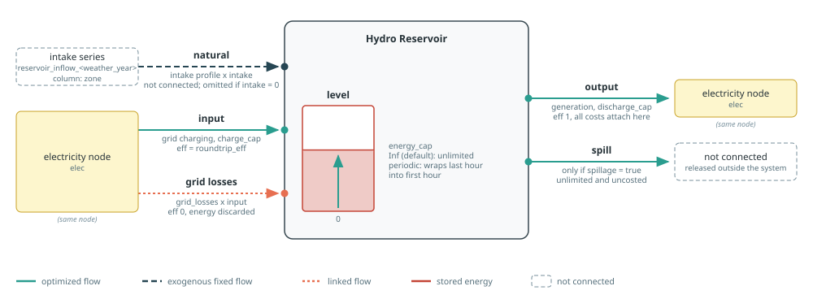
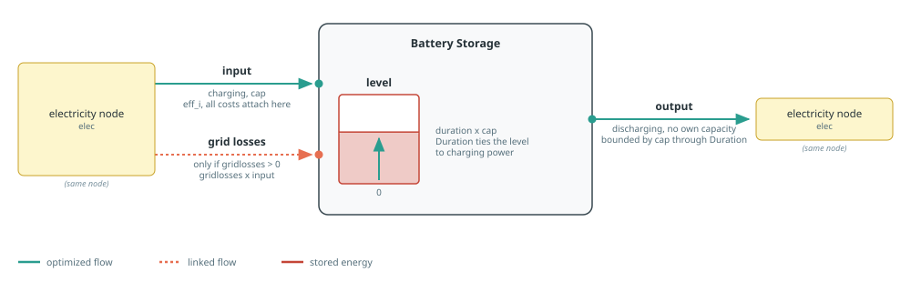

Storage
Storage builders move electricity across time. Battery investment is attached to charging power, while reservoir investment is attached to discharge power. Hydrogen conversion and storage are documented on the Hydrogen page.
See Component Builders for shared naming, workbook, capacity, and port conventions, and Tags And Post-Processing for tagging and reporting. Each section's diagram follows the conventions in Reading The Port Diagrams.
Hydro Reservoir
makehydroreservoir creates a storage component with up to five flows:
naturalis unconnected fixed intake from the reservoir series;inputis grid charging, always present and possibly at zero capacity;outputis electricity generation;spillis optional unconnected release, enabled byspillage;levelis stored energy.

In a balance query, :input selects all input-sense ports. Thus aggregate=true sums the reservoir's natural and input flows, plus grid losses when configured. To distinguish natural intake from grid charging, use aggregate=false and read the "natural" or "input" entry.
Each of cap_discharging, cap_charging, and cap_reservoir accepts a JuMP variable or affine expression as externally defined capacity, an extracted snapshot to inherit the matching component's capacity on that port, a number to fix it, or nothing to create a new decision. Each has its own mincap_*/maxcap_* bounds. The grid-charging branch always exists: numeric zero charging gives it a zero capacity, so a turbine-only reservoir still reports a charging flow of zero. A finite numeric cap_reservoir fixes level capacity, nothing creates a level decision, and Inf (the default) leaves the stored-energy level unlimited by adding no level capacity behaviour.
For example, use cap_reservoir=12_000.0 for a fixed 12 GWh reservoir, cap_reservoir=nothing to let the model choose its energy capacity, or omit the keyword (equivalently, pass Inf) for an unlimited level.
Storage is periodic, so without a spill flow every unit of natural intake must eventually be turbined. That can force uneconomic generation, or make the reservoir infeasible when intake, turbine capacity, and level capacity do not fit together. spillage=true adds an unlimited, uncosted spill output that absorbs the excess. It is opt-in: the default spillage=false keeps the forced use of all inflow. Spilled energy is reported by the hourly sheet's Total spillage and spillage <component> columns.
The intake profile comes from sheet reservoir_inflow_<weatheryear>, column <zone>. When intake_profile is omitted and intake is enabled, weatheryear must be provided explicitly. It defaults to nothing and is unused with an explicit profile or with intake=0. The profile is always normalized to sum to one, then scaled by the requested total intake.
eff defaults to roundtrip_eff in the technology column named by techkey of sheet storage. It applies to grid charging; natural intake and discharge have unit efficiency. gridlosses adds a proportional linked input flow. Cost defaults come from the same technology column and are attached to discharge capacity.
Tags: :tech => cname, :zone => elec.name, and the function tags generation, storage, and carbonfree.
See the Hydro Reservoir example for a turbine-only reservoir, and the Pumped Storage example for a reservoir with grid charging.
Posy2.makehydroreservoir — Function
makehydroreservoir(cname::String, techkey::String, zone::String, elec::Node, s::Snapshot;
cap_discharging, cap_charging, intake,
mincap_discharging=nothing, maxcap_discharging=nothing,
mincap_charging=nothing, maxcap_charging=nothing,
mincap_reservoir=nothing, maxcap_reservoir=nothing,
cap_reservoir=Inf, spillage=false,
weatheryear=nothing, gridlosses=0., simplified=false,
intake_profile=nothing,
eff::Union{Nothing,Real}=nothing,
overnight_cost::Union{Nothing,Real}=nothing, om_fixed_cost::Union{Nothing,Real}=nothing, om_var_cost::Union{Nothing,Real}=nothing,
decommissioning::Union{Nothing,Real}=nothing, lifetime::Union{Nothing,Real}=nothing,
construction_profile=nothing, decommissioning_profile=nothing,
)Build, connect and return a hydro reservoir component.
Arguments:
cname: component name prefix.techkey: technology column name in thestoragetech data sheet.zone: Zone used for reservoir intake time series lookup.elec: electricity node to connect the component to.s: snapshot to register the component in.cap_discharging: Output capacity. A number fixes capacity, a JuMPVariableReforAffExprreuses that expression,nothingcreates a capacity decision, and an extractedSnapshotinherits the capacity of"<cname> <node name>"in it.cap_charging: Input capacity with the same choices. Theinputport is always created; numeric0gives it a zero capacity, so a turbine-only reservoir still reports a charging flow of zero.intake: Total natural intake.0disables natural intake; a positive value is distributed over the normalized intake profile.mincap_discharging,maxcap_discharging,mincap_charging,maxcap_charging,mincap_reservoir,maxcap_reservoir: Bounds on the corresponding optimized or externally supplied capacity, checked as assertions against a fixed or inherited one.cap_reservoir: Storage level capacity, with the same choices ascap_discharging, plusInf(the default) which leaves the level unlimited by adding no level capacity behavior.spillage: Add an unconnected, unlimitedspilloutput that lets the reservoir release stored energy without generating. It defaults tofalse, which forces all natural intake to eventually become generation.weatheryear: Year suffix used to select the intake series stored inreservoir_inflow_<year>. Required whenintake_profileis read from the time-series workbook; unused when a profile is supplied explicitly or natural intake is disabled.gridlosses: Proportional losses linked to charging input flow (0 <= gridlosses < 1).simplified: Passed toLazyStorage(..., simplified=...).intake_profile: Hourly natural-intake shape or scalar, nonnegative with a strictly positive sum. It is always normalized to sum to one beforeintakeis applied. Ifnothing, readzonefromreservoir_inflow_<weatheryear>.eff: Roundtrip charging efficiency (input side conversion).overnight_cost: Cost/lifetime overrides for annualized fixed and variable cost terms. Workbook defaults are used when values arenothing.om_fixed_cost: Cost/lifetime overrides for annualized fixed and variable cost terms. Workbook defaults are used when values arenothing.om_var_cost: Cost/lifetime overrides for annualized fixed and variable cost terms. Workbook defaults are used when values arenothing.decommissioning: Cost/lifetime overrides for annualized fixed and variable cost terms. Workbook defaults are used when values arenothing.lifetime: Cost/lifetime overrides for annualized fixed and variable cost terms (> 0, integer-valued). Workbook defaults are used when values arenothing.construction_profile: Cost/lifetime overrides for annualized fixed and variable cost terms. Workbook defaults are used when values arenothing.decommissioning_profile: Decommissioning cost share profile passed todecom_cost(...). Workbook defaults are used when values arenothing.
Batteries
makebatterystorage creates electricity storage with input, output, and level ports. cap is charging power: a number fixes it, a JuMP variable or affine expression reuses an external decision, nothing creates a new decision, and an extracted snapshot fixes charging power to the matching component's capacity. mincap and maxcap bound either variable form.

duration links energy level to power capacity. It is structural: it comes from the storage technology column in :excel mode and must be supplied in :arguments mode. eff sets the storage input efficiency, and simplified selects the corresponding Nosy storage formulation. In :arguments mode, efficiency defaults to one and economic terms to zero; inactive capital and decommissioning data are not resolved. Investment, connection, fixed O&M, decommissioning, and variable O&M costs are attached to input capacity or flow. gridlosses adds a linked charging loss.
Tags: :tech => cname, :zone => elec.name, and the function tags electricity, storage, and generation. These tags make charging and discharging enter the appropriate Posy2 reports.
See the Battery Storage example for a complete model using this builder.
Posy2.makebatterystorage — Function
makebatterystorage(cname::String, techkey::String, elec::Node, s::Snapshot;
cap=nothing, mincap=nothing, maxcap=nothing, simplified=false,
gridlosses=0.,
eff::Union{Nothing,Real}=nothing, duration::Union{Nothing,Real}=nothing,
overnight_cost::Union{Nothing,Real}=nothing, om_fixed_cost::Union{Nothing,Real}=nothing,
decommissioning::Union{Nothing,Real}=nothing, lifetime::Union{Nothing,Real}=nothing, construction_profile=nothing, decommissioning_profile=nothing,
connection_cost::Union{Nothing,Real}=nothing, om_var_cost::Union{Nothing,Real}=nothing,
)Build, connect and return a battery storage component.
Arguments:
cname: component name prefix.techkey: technology column name in thestoragetech data sheet.elec: electricity node to connect the component to.s: snapshot to register the component in.cap: Charging/input capacity. A number fixes capacity, a JuMPVariableReforAffExprreuses that expression,nothingcreates a capacity decision, and an extractedSnapshotinherits the capacity of"<cname> <node name>"in it.mincap: Lower bound on an optimized or externally supplied capacity; checked as an assertion against a fixed or inherited one.maxcap: Upper bound on an optimized or externally supplied capacity; checked as an assertion against a fixed or inherited one.simplified: Passed toBasicStorage(..., simplified=...).gridlosses: Proportional losses linked to charging input flow (0 <= gridlosses < 1).eff: Roundtrip storage efficiency (eff_iinBasicStorage).duration: Storage duration parameter (Duration(...)behavior,duration > 0). workbook default whennothing.overnight_cost: CAPEX/FOM/lifetime inputs for annualized fixed cost terms. Workbook defaults are used when values arenothing.om_fixed_cost: CAPEX/FOM/lifetime inputs for annualized fixed cost terms. Workbook defaults are used when values arenothing.decommissioning: CAPEX/FOM/lifetime inputs for annualized fixed cost terms. Workbook defaults are used when values arenothing.lifetime: CAPEX/FOM/lifetime inputs for annualized fixed cost terms (> 0, integer-valued). Workbook defaults are used when values arenothing.construction_profile: CAPEX/FOM/lifetime inputs for annualized fixed cost terms. Workbook defaults are used when values arenothing.decommissioning_profile: Decommissioning cost share profile passed todecom_cost(...). Workbook defaults are used when values arenothing.connection_cost: Ratio applied to annualized investment as connection fixed cost.om_var_cost: Variable O&M coefficient on charging/input energy flow.